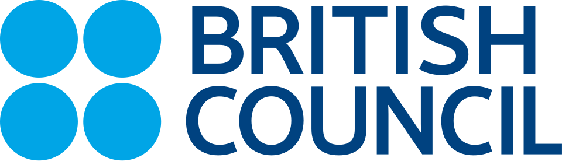
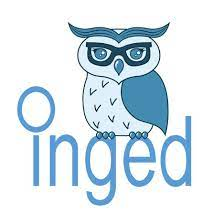

A British Council – INGED partnership project bringing 60 English language teaching professionals together to co-create an open-access handbook on smart lesson planning and 21st-century skills.
Technology-Enhanced Lesson Planning for 21st-Century Skills is a year-long professional development and co-authoring project run by INGED in partnership with the British Council. Sixty selected teachers and teacher educators move through an intensive online training cycle, then work together through a sequence of writing workshops to produce an open-access handbook on smart lesson planning and 21st-century skills.
The programme combines synchronous evening webinars on Zoom with asynchronous WhatsApp discussions, draws directly on the British Council’s TeachingEnglish tools and model lesson plans, and feeds insights from a national face-to-face showcase and three regional training days into the final handbook.
Some volunteer participants also take part in additional dissemination events — a national showcase in Bursa, and three regional training days that bring the handbook to wider Communities of Practice across Turkey.
Funded by the British Council. All expenses for the face-to-face events — organisation, travel, accommodation, and food — are fully covered by the project.
All 60 selected participants take part in the full online programme: a kick-off webinar, a five-week evening training cycle, three academic publishing and writing workshops, and a closing celebration.
A country-wide online webinar opening the project. Participants meet the team, walk through the project road map, and get a guided showcase of the British Council’s TeachingEnglish tools that will underpin the rest of the programme.
Each week, materials are shared in advance, followed by a synchronous evening reflection session on Zoom and asynchronous WhatsApp discussions during the week. The focus is on lesson and course planning, expanded over the second half to include the integration of technology and 21st-century skills.
Output: the collaborative writing of an open-access handbook on smart lesson planning and 21st-century skills begins.
Three evening workshops where participants continue work on the open-access handbook and revise & adapt TeachingEnglish materials and model lesson plans.
An online celebration and competition open to English teaching professionals and stakeholders, showcasing the achievements of the cohort and marking the formal end of the project.
These events are voluntary. If there are no volunteers, hosts and participants may be selected randomly — so any participant could be invited to take part. All expenses (organisation, travel, accommodation, and food) are fully covered by the project.
Open to English teaching professionals and stakeholders. Sub-theme presentations, classroom examples, lesson-planning priorities, panels, interactive exhibits, and networking. Insights from the day feed directly into the final handbook.
One event per region, three events in total. Dates and locations to be confirmed. Each day is hosted by a volunteer participant and is open to English teaching professionals and stakeholders — the aim is to disseminate the handbook to more teachers in regional Communities of Practice.

Funder and content partner. Provides the TeachingEnglish tools, model lesson plans, and editorial support that underpin the programme.

Project coordinator. Convenes the cohort, runs the online and face-to-face programme, and edits the open-access handbook.
Selected participants and partner institutions can reach the project team through INGED. Get in touch for more information about future cohorts or to follow the handbook’s publication.